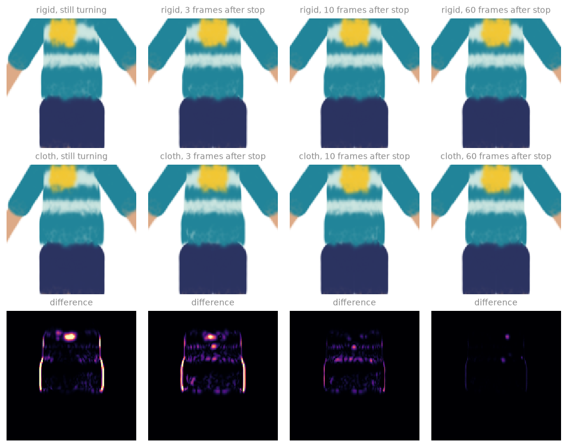
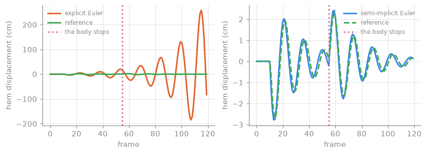
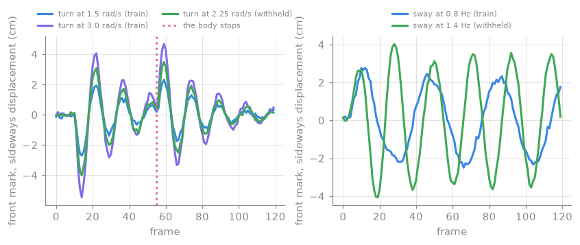
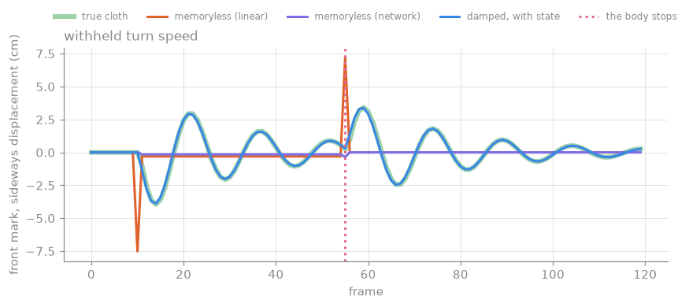
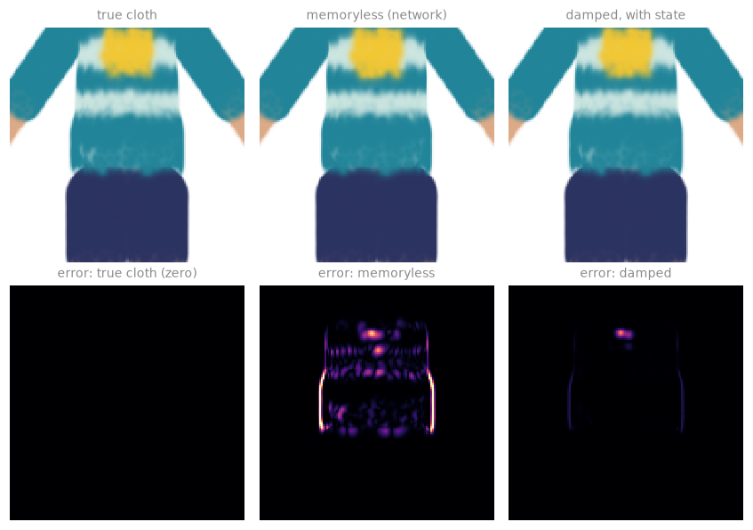

Why does cloth need memory?#
What you will learn
What secondary motion is, and how a damped spring driven by the body’s acceleration produces lag, sway and settling.
Why explicit Euler integration blows up on a springy system, and why semi-implicit Euler does not.
Why any model that maps the body’s instantaneous motion to a displacement is memoryless, and returns to exactly zero when the body stops.
How to fit a model with state by gradient descent through its simulation, and how to test it: amplitude, lag and settling time at a speed it was not trained on.
Prerequisites: Lesson 3b (skinning; a Gaussian’s rest-pose position) and Lesson 5a (fitting by gradient descent). Lesson 6b made appearance depend on the pose. This lesson makes geometry depend on the motion.
1. Secondary motion, and a toy cloth that has it#
The avatar so far is rigidly tied to its skeleton. Every Gaussian sits at a fixed place in the rest pose and skinning carries it along. Real clothing and hair do more. When the body turns, a loose hem lags behind. When the body stops, the hem overshoots, swings back, and settles over a second or two. This is called secondary motion: motion that the body causes but the skeleton does not describe.
The toy actor wears a loose shirt. To give it secondary motion we add a displacement \(\mathbf{x}_i(t)\) to the
rest-pose position of each shirt Gaussian \(i\) before skinning (the extra_offset argument of the actor). The
physics is the simplest that has the three behaviours. Treat each Gaussian as a small mass on a damped spring
that is attached to the body. In the frame that moves with the body, the mass feels the spring, the damper,
and an inertial force opposite to the body’s acceleration \(\mathbf{a}_i(t)\) at that point:
Three numbers describe the cloth: the natural frequency \(\omega_0 = 2\pi f_0\) (how fast it swings), the damping ratio \(\zeta\) (how fast the swing dies; \(\zeta < 1\) rings), and a gain \(\gamma\). Each Gaussian’s displacement is finally scaled by its looseness \(r_i \in [0, 1]\), which is zero where the shirt lies on the body and one at the hem.
The important word is state. To step this equation forward you need \(\mathbf{x}\) and \(\dot{\mathbf{x}}\) from the previous instant. The cloth remembers.
FPS = 30.0
actor = cu.ToyActor()
loose = mo.looseness(actor) # r_i in [0, 1], from the shirt's stand-off distance
shirt = torch.nonzero(loose > 0.05)[:, 0] # the Gaussians that can move
print(f"{len(shirt)} of {actor.n_gaussians} Gaussians are loose cloth")
TRUE = dict(f0=2.0, zeta=0.10, gain=1.5) # the cloth we will try to recover
N, START, STOP = 120, 10, 55 # frames: start turning at 10, stop dead at 55
def true_offsets(poses, trans, idx):
"""Ground-truth displacement (T, len(idx), 3) of Gaussians idx, simulated with small time steps."""
_, acc = mo.local_kinematics(actor, poses, trans, idx, FPS)
w0 = 2 * math.pi * TRUE["f0"]
x = mo.simulate_spring(acc, 1 / FPS, w0 ** 2, 2 * TRUE["zeta"] * w0, TRUE["gain"], substeps=16)
return x * loose[idx][None, :, None]
def full_offsets(x_shirt):
"""Scatter shirt displacements (T, n_shirt, 3) into per-Gaussian offsets (T, N, 3) for rendering."""
out = torch.zeros(x_shirt.shape[0], actor.n_gaussians, 3)
out[:, shirt] = x_shirt
return out
poses, trans = mo.turn_and_stop(N, rate=2.25, stop=STOP, fps=FPS, start=START)
x_true = true_offsets(poses, trans, shirt)
yaw_end = float(poses[-1, 0, 1]) # where the body faces after the stop
cam = cu.look_at(eye=(2.6 * math.sin(yaw_end), 1.15, 2.6 * math.cos(yaw_end)), target=(0.0, 1.05, 0.0), fov_deg=17, size=144)
shown = (STOP - 5, STOP + 3, STOP + 10, STOP + 60)
rigid = [actor.render(cam, poses[t], trans[t])[0] for t in shown]
cloth = [actor.render(cam, poses[t], trans[t], extra_offset=full_offsets(x_true)[t])[0] for t in shown]
labels = ["still turning" if t < STOP else f"{t - STOP} frames after stop" for t in shown]
cu.show_images(rigid + cloth + [(c - r).abs().sum(-1) for c, r in zip(cloth, rigid)],
[f"rigid, {l}" for l in labels] + [f"cloth, {l}" for l in labels] + ["difference"] * 4,
ncols=4, size=2.2, vmax=1.0);
1501 of 8332 Gaussians are loose cloth

The body turns at a constant rate and then stops dead. In the top row the shirt is rigid, so after the stop every frame is the same picture. In the middle row the hem keeps going for a moment, swings back, and has settled two seconds later. A few centimetres of hem are easy to miss in a still, so the bottom row shows where the two rows differ; in motion the eye picks it up at once.
mo.local_kinematics supplies \(\mathbf{a}_i(t)\): it skins the Gaussian rigidly, takes central differences of
its world position, and rotates the result into the Gaussian’s own rest-pose axes, which is the frame the
displacement lives in.
2. Stepping a spring: the obvious integrator explodes#
A simulation advances the state by one time step \(h\) after another. The obvious rule is explicit Euler: use the current velocity to move, and the current force to accelerate.
Semi-implicit Euler differs by one detail: update the velocity first, then move with the new velocity. The cost is identical. The behaviour is not.
def simulate(acc, h, stiffness, damping, gain=1.0, method="semi"):
"""x'' = -stiffness x - damping x' - gain acc(t), one step per frame. acc: (T, ...)."""
x, v, out = torch.zeros_like(acc[0]), torch.zeros_like(acc[0]), []
for a_body in acc:
out.append(x)
f = -stiffness * x - damping * v - gain * a_body
if method == "explicit":
x, v = x + h * v, v + h * f # move with the old velocity
else:
v = v + h * f # velocity first ...
x = x + h * v # ... then move with the new velocity
return torch.stack(out)
mark = shirt[(loose[shirt] * actor.rest_points[shirt, 2]).argmax()] # a hem Gaussian at the front
_, acc_mark = mo.local_kinematics(actor, poses, trans, mark[None], FPS)
w0 = 2 * math.pi * TRUE["f0"]
k_true, c_true = w0 ** 2, 2 * TRUE["zeta"] * w0
x_exp = simulate(acc_mark, 1 / FPS, k_true, c_true, method="explicit")[:, 0, 0]
x_semi = simulate(acc_mark, 1 / FPS, k_true, c_true, method="semi")[:, 0, 0]
x_ref = mo.simulate_spring(acc_mark, 1 / FPS, k_true, c_true, substeps=16)[:, 0, 0]
assert float((simulate(acc_mark, 1 / FPS, k_true, c_true) - mo.simulate_spring(acc_mark, 1 / FPS, k_true, c_true)).abs().max()) < 1e-6
growth = math.sqrt(1 - 2 * TRUE["zeta"] * w0 / FPS + (w0 / FPS) ** 2) # explicit Euler: factor per step
print(f"explicit Euler multiplies the oscillation by {growth:.3f} per frame; after {N} frames that is x{growth ** N:.0f}")
print(f"largest displacement: explicit {100 * float(x_exp.abs().max()):.0f} cm | semi-implicit {100 * float(x_semi.abs().max()):.2f} cm | "
f"reference (16 substeps) {100 * float(x_ref.abs().max()):.2f} cm")
assert float(x_exp.abs().max()) > 10 * float(x_ref.abs().max()) and float((x_semi - x_ref).abs().max()) < 0.3 * float(x_ref.abs().max())
frames = cu.to_np(torch.arange(N))
fig, axes = plt.subplots(1, 2, figsize=(9.0, 2.9))
axes[0].plot(frames, 100 * cu.to_np(x_exp), color=cu.COLORS["error"], label="explicit Euler")
axes[0].plot(frames, 100 * cu.to_np(x_ref), color=cu.COLORS["truth"], label="reference")
axes[1].plot(frames, 100 * cu.to_np(x_semi), color=cu.COLORS["gaussian"], label="semi-implicit Euler")
axes[1].plot(frames, 100 * cu.to_np(x_ref), "--", color=cu.COLORS["truth"], label="reference")
for ax in axes:
ax.axvline(STOP, color=cu.COLORS["contact"], ls=":", label="the body stops")
ax.set_xlabel("frame"); ax.set_ylabel("hem displacement (cm)"); ax.legend(fontsize=8)
explicit Euler multiplies the oscillation by 1.045 per frame; after 120 frames that is x193
largest displacement: explicit 258 cm | semi-implicit 2.78 cm | reference (16 substeps) 2.69 cm

With explicit Euler the hem swings a little wider on every frame and ends up metres from the body. Nothing is wrong with the physics or the parameters; the integrator feeds energy into the oscillation. For this equation one explicit step multiplies the amplitude by \(\sqrt{1 - 2\zeta\omega_0 h + \omega_0^2 h^2}\), which exceeds one whenever \(\omega_0 h > 2\zeta\): a stiff or lightly damped spring at a video frame rate. The semi-implicit rule stays bounded as long as \(\omega_0 h < 2\) and tracks the reference closely at one step per frame. A model that will be trained through its simulation needs this even more than a simulation does, because the optimiser will try stiffer springs than the true one on its way.
3. The data: marks on the hem#
To learn the cloth we need to observe it. The plan in the real project is footage with tape marks on the shirt. The toy version is 48 “tape marks”: hem Gaussians whose 3D displacement we record in every frame, with a millimetre of measurement noise. The training clips are two turn-and-stop takes at different speeds and one take of swaying from side to side. Two takes are withheld for testing: a turn-and-stop at a speed between the training speeds, and a sway at a different frequency.
hem = torch.nonzero(loose > 0.95)[:, 0]
marks = hem[cu.randint(0, len(hem), (48,), generator=cu.generator(0))]
m_front = int(actor.rest_points[marks, 2].argmax()) # the mark we plot: front of the hem
def take(poses, trans, seed):
"""One recorded take: features and noisy mark displacements."""
vel, acc = mo.local_kinematics(actor, poses, trans, marks, FPS)
clean = true_offsets(poses, trans, marks)
return dict(vel=vel, acc=acc, clean=clean, obs=clean + 0.001 * cu.randn(*clean.shape, generator=cu.generator(seed)))
train = [take(*mo.turn_and_stop(N, 1.5, STOP, FPS, START), seed=1),
take(*mo.turn_and_stop(N, 3.0, STOP, FPS, START), seed=2),
take(*mo.sway(N, freq=0.8, amp=0.08, fps=FPS), seed=3)]
test_stop = take(*mo.turn_and_stop(N, 2.25, STOP, FPS, START), seed=4) # withheld speed
SWAY_TEST = 1.4
test_sway = take(*mo.sway(N, freq=SWAY_TEST, amp=0.025, fps=FPS), seed=5) # withheld frequency
fig, axes = plt.subplots(1, 2, figsize=(9.0, 2.9))
for clip, label, colour in ((train[0], "turn at 1.5 rad/s (train)", cu.COLORS["gaussian"]),
(train[1], "turn at 3.0 rad/s (train)", cu.COLORS["camera"]),
(test_stop, "turn at 2.25 rad/s (withheld)", cu.COLORS["truth"])):
axes[0].plot(frames, 100 * cu.to_np(clip["obs"][:, m_front, 0]), color=colour, label=label)
axes[0].axvline(STOP, color=cu.COLORS["contact"], ls=":", label="the body stops")
axes[0].set_xlabel("frame"); axes[0].set_ylabel("front mark, sideways displacement (cm)")
axes[0].legend(fontsize=7, ncol=2, loc="lower center", bbox_to_anchor=(0.5, 1.0))
axes[1].plot(frames, 100 * cu.to_np(train[2]["obs"][:, m_front, 0]), color=cu.COLORS["gaussian"], label="sway at 0.8 Hz (train)")
axes[1].plot(frames, 100 * cu.to_np(test_sway["obs"][:, m_front, 0]), color=cu.COLORS["truth"], label=f"sway at {SWAY_TEST} Hz (withheld)")
axes[1].set_xlabel("frame"); axes[1].set_ylabel("front mark, sideways displacement (cm)")
axes[1].legend(fontsize=7, loc="lower center", bbox_to_anchor=(0.5, 1.0));

The left panel is the signature of secondary motion. The mark is kicked when the turn starts, rings, is kicked again when the body stops, and rings down while the body is perfectly still.
4. A memoryless model#
The first idea, and the one the real project built first, is a function of the body’s motion right now. Collect instantaneous motion features \(\mathbf{m}_i(t)\), here the velocity and the acceleration of the Gaussian in its own axes, and learn
\(F\) is a linear map fitted by least squares, or a small network in the residual form \(\operatorname{mlp}(\mathbf{m}) - \operatorname{mlp}(\mathbf{0})\), which guarantees that a body at rest shows the static avatar. Such a model is memoryless: its output at time \(t\) depends on nothing but the features at time \(t\).
linear = mo.MemorylessLinear().fit([(c["vel"], c["acc"], c["obs"]) for c in train])
mlp = mo.MemorylessMLP(hidden=32, seed=0)
mlp_loss = mlp.fit([(c["vel"], c["acc"], c["obs"]) for c in train], iters=500)
print(f"network training loss: {mlp_loss[0]:.3f} -> {np.mean(mlp_loss[-20:]):.3f} cm^2")
def predict_memoryless(model, clip):
with torch.no_grad():
return model(clip["vel"], clip["acc"])
rms = lambda x: 1000 * float((x ** 2).mean().sqrt())
after = slice(STOP + 3, N) # from three frames after the stop
feat_after = torch.cat([test_stop["vel"][after], test_stop["acc"][after]], -1)
print(f"withheld turn, from 3 frames after the stop: largest |feature| {float(feat_after.abs().max()):.1e}")
for name, model in (("linear", linear), ("network", mlp)):
pred = predict_memoryless(model, test_stop)
print(f" {name:8s} largest predicted displacement {1000 * float(pred[after].abs().max()):.3f} mm | "
f"true cloth still moves by {rms(test_stop['clean'][after]):.2f} mm rms")
assert float(pred[after].abs().max()) == 0.0, "a memoryless model must be exactly zero once the features are zero"
assert rms(test_stop["clean"][after]) > 1.0
network training loss: 0.657 -> 0.297 cm^2
withheld turn, from 3 frames after the stop: largest |feature| 0.0e+00
linear largest predicted displacement 0.000 mm | true cloth still moves by 5.36 mm rms
network largest predicted displacement 0.000 mm | true cloth still moves by 5.36 mm rms
Exactly zero. Not small: zero, from the frame at which the finite-difference features vanish. A bigger network, more features or more data would not change it, because the argument does not involve the fit at all. Once the body is still, every instantaneous motion feature is zero, \(F(\mathbf{0}) = \mathbf{0}\), and the cloth is back in its rest shape. The ringing after the stop is caused by what the body did earlier, and the model has no input that says what happened earlier. (Features computed over a window of frames move the problem by the length of the window; they do not remove it.)
5. A model with state, fitted through its simulation#
The alternative keeps what the physics keeps. mo.DampedModes is the equation of Section 1 with three
learnable numbers, \(f_0\), \(\zeta\) and \(\gamma\), integrated with semi-implicit Euler in two steps per frame. Its
state \((\mathbf{x}, \dot{\mathbf{x}})\) is carried from frame to frame. To fit it, run the simulation over each
training take, compare the simulated marks with the observed ones, and let automatic differentiation carry the
error back through every time step to the three parameters.
damped = mo.DampedModes(f0=1.0, zeta=0.5, gain=0.5, substeps=2) # a deliberately wrong start
print(f"start: f0 {damped.f0.item():.2f} Hz, zeta {damped.zeta.item():.2f}, gain {damped.gain.item():.2f}")
t0 = time.perf_counter()
loss_hist = mo.fit_damped(damped, [(c["acc"], c["obs"]) for c in train], iters=200, lr=0.05, fps=FPS)
print(f"fit: f0 {damped.f0.item():.2f} Hz, zeta {damped.zeta.item():.2f}, gain {damped.gain.item():.2f}"
f" (true: {TRUE['f0']:.2f}, {TRUE['zeta']:.2f}, {TRUE['gain']:.2f}) {time.perf_counter() - t0:.0f} s")
print(f"loss {loss_hist[0]:.3f} -> {loss_hist[-1]:.4f} cm^2")
assert abs(damped.f0.item() - TRUE["f0"]) < 0.15 and abs(damped.zeta.item() - TRUE["zeta"]) < 0.05
assert abs(damped.gain.item() - TRUE["gain"]) < 0.15 * TRUE["gain"]
def predict_damped(clip):
with torch.no_grad():
return damped(clip["acc"], FPS)
preds = {"memoryless (linear)": predict_memoryless(linear, test_stop), "memoryless (network)": predict_memoryless(mlp, test_stop),
"damped, with state": predict_damped(test_stop)}
colours = {"memoryless (linear)": cu.COLORS["error"], "memoryless (network)": cu.COLORS["camera"], "damped, with state": cu.COLORS["gaussian"]}
fig, ax = plt.subplots(figsize=(9.0, 3.2))
ax.plot(frames, 100 * cu.to_np(test_stop["clean"][:, m_front, 0]), color=cu.COLORS["truth"], lw=4, alpha=0.5, label="true cloth")
for name, pred in preds.items():
ax.plot(frames, 100 * cu.to_np(pred[:, m_front, 0]), color=colours[name], label=name)
ax.axvline(STOP, color=cu.COLORS["contact"], ls=":", label="the body stops")
ax.set_xlabel("frame"); ax.set_ylabel("front mark, sideways displacement (cm)")
ax.set_title("withheld turn speed", loc="left"); ax.legend(fontsize=8, ncol=5, loc="lower center", bbox_to_anchor=(0.5, 1.08));
start: f0 1.00 Hz, zeta 0.50, gain 0.50
fit: f0 1.96 Hz, zeta 0.10, gain 1.43 (true: 2.00, 0.10, 1.50) 16 s
loss 0.612 -> 0.0119 cm^2

The fit recovers the cloth’s frequency, damping and gain from a wrong start, up to a small bias from its coarse time step. On the withheld take the damped model lies on the true curve, including everything after the stop. Both memoryless models produce a spike in the frames where the body accelerates and a flat line elsewhere.
6. The test: amplitude, lag and settling at a withheld speed#
A fair test of a dynamics model is not a pixel score on frames like the training frames. It is a take the model has not seen, at a speed it has not seen, scored on what dynamics is about. For the stop:
amplitude: the largest displacement after the stop;
lag: when that peak arrives, in seconds after the stop;
settling time: how long until the displacement stays below a tenth of the true amplitude.
For the sway at a withheld frequency: the amplitude of the response and its phase lag behind the driving force, from a sine fit.
truth_stop = mo.settle_metrics(test_stop["clean"][:, m_front, 0], STOP, FPS)
print(f"{'withheld turn-and-stop':24s} amplitude (cm) peak after stop (s) settling time (s)")
table = {"true cloth": truth_stop}
print(f"{'true cloth':24s} {100 * truth_stop['amplitude']:10.2f} {truth_stop['first_peak_s']:17.2f} {truth_stop['settle_s']:18.2f}")
for name, pred in preds.items():
table[name] = mo.settle_metrics(pred[:, m_front, 0], STOP, FPS, reference=truth_stop["amplitude"])
print(f"{name:24s} {100 * table[name]['amplitude']:10.2f} {table[name]['first_peak_s']:17.2f} {table[name]['settle_s']:18.2f}")
drive = -test_sway["acc"][:, m_front, 0] # the inertial force on the mark
sway_preds = {"true cloth": test_sway["clean"], "memoryless (linear)": predict_memoryless(linear, test_sway),
"memoryless (network)": predict_memoryless(mlp, test_sway), "damped, with state": predict_damped(test_sway)}
print(f"\n{'withheld sway frequency':24s} amplitude (cm) phase lag (deg)")
sway_table = {}
for name, pred in sway_preds.items():
sway_table[name] = mo.sine_response(pred[:, m_front, 0], drive, SWAY_TEST, FPS, skip=45)
print(f"{name:24s} {100 * sway_table[name]['amplitude']:10.2f} {sway_table[name]['lag_deg']:14.1f}")
d, t_ = table["damped, with state"], table["true cloth"]
assert abs(d["amplitude"] - t_["amplitude"]) < 0.15 * t_["amplitude"] and abs(d["settle_s"] - t_["settle_s"]) < 0.5
assert abs(d["first_peak_s"] - t_["first_peak_s"]) < 0.07
for name in ("memoryless (linear)", "memoryless (network)"):
assert table[name]["settle_s"] < 0.15 and t_["settle_s"] > 1.0 # settles "instantly"; the cloth takes over a second
ds, ts = sway_table["damped, with state"], sway_table["true cloth"]
assert abs(ds["amplitude"] - ts["amplitude"]) < 0.2 * ts["amplitude"] and abs(ds["lag_deg"] - ts["lag_deg"]) < 8
for name in ("memoryless (linear)", "memoryless (network)"):
miss = sway_table[name]
assert abs(miss["amplitude"] - ts["amplitude"]) > 0.2 * ts["amplitude"] or abs(miss["lag_deg"] - ts["lag_deg"]) > 10
withheld turn-and-stop amplitude (cm) peak after stop (s) settling time (s)
true cloth 3.42 0.13 1.93
memoryless (linear) 7.22 0.00 0.03
memoryless (network) 0.35 0.00 0.03
damped, with state 3.38 0.13 1.93
withheld sway frequency amplitude (cm) phase lag (deg)
true cloth 3.40 23.0
memoryless (linear) 1.19 7.4
memoryless (network) 2.23 4.8
damped, with state 3.44 19.9
Read the table row by row. The damped model matches the true cloth on all three stop measures and on the sway. The memoryless models are finished a frame or two after the stop, where the cloth needs more than a second. Whatever displacement they show “after the stop” is the last frame in which the finite-difference features are still non-zero.
The sway deserves a second look, because here the memoryless models are not zero. A body that sways never stops, so there are always features to respond to. For a pure sine, velocity is a quarter-period-shifted copy of acceleration, so a mix of the two can imitate a lagging response at the training frequency. At another frequency the true amplitude and lag change, because the cloth is closer to its resonance, and a fixed mix cannot follow. This is the reason to withhold a speed and not just frames.
Finally the picture. Four frames after the stop, on the withheld take:
t_show = STOP + 4
with torch.no_grad():
vel_all, acc_all = mo.local_kinematics(actor, *mo.turn_and_stop(N, 2.25, STOP, FPS, START), shirt, FPS)
pose_s, trans_s = mo.turn_and_stop(N, 2.25, STOP, FPS, START)
off = {"true cloth": x_true[t_show],
"memoryless (network)": (mlp(vel_all, acc_all) * loose[shirt][None, :, None])[t_show],
"damped, with state": (damped(acc_all, FPS) * loose[shirt][None, :, None])[t_show]}
imgs = {k: actor.render(cam, pose_s[t_show], trans_s[t_show], extra_offset=full_offsets(v[None])[0])[0] for k, v in off.items()}
still = actor.render(cam, pose_s[t_show], trans_s[t_show])[0]
cu.show_images(list(imgs.values()) + [(im - imgs["true cloth"]).abs().sum(-1) for im in imgs.values()],
list(imgs) + ["error: true cloth (zero)", "error: memoryless", "error: damped"],
ncols=3, size=2.6, vmax=1.0);
err = {k: float((im - imgs["true cloth"]).abs().mean()) for k, im in imgs.items()}
print("mean absolute image error against the true cloth:", {k: round(v, 5) for k, v in err.items()})
assert float(off["memoryless (network)"].abs().max()) == 0.0 # the memoryless offset is exactly zero,
assert float((imgs["memoryless (network)"] - still).abs().max()) < 1e-5 # so its render is the rigid render (a GPU
# sums in a varying order: equal to rounding)
assert err["damped, with state"] < 0.5 * err["memoryless (network)"]
mean absolute image error against the true cloth: {'true cloth': 0.0, 'memoryless (network)': 0.0077, 'damped, with state': 0.00088}

The memoryless avatar, four frames after the stop, is pixel for pixel the rigid avatar. The damped one still carries the swing.
What this toy does not show#
The data are generous. We observed 3D displacements of marks. A real capture gives pixels from one camera; the displacement has to be inferred through the renderer, together with pose errors that are larger than the cloth motion.
The model family contains the truth. The true cloth is this same spring equation (simulated with a finer step and observed with noise), so recovering it is the best case. Real cloth is a connected sheet with collisions and folds, not independent springs.
One mode. Every Gaussian here shares one frequency and one damping. A garment has several modes, and hair has its own.
What survives all three caveats is the argument of Section 4, which is not about the toy: without state there is nothing after the stop.
In the real pipeline#
Topic |
Where |
Published facts |
|---|---|---|
The secondary-motion network |
|
A displacement along the shell normal for cloth and hair Gaussians, from an MLP on instantaneous motion features (angular and linear velocities and accelerations), in the residual form |
Its measured effect |
docs/plus-secmotion.md, RESULTS.md |
Every arm is within seed noise of “off” (0.045 dB validation spread). The first settings memorised: about +0.27 dB on training frames and −0.05 dB on validation frames |
The zero-after-stop behaviour |
docs/research_brief.md, |
Confirmed by a test: the displacement is exactly 0 a few frames after an abrupt stop. No fix yet |
The plan for dynamics with state |
docs/mobile_parts.md |
Candidates: a few damped oscillator modes per garment region and for hair, driven by body acceleration, or a learned recurrent model. The test: a turn, an abrupt stop and settling, with marks on the garment, scored on amplitude, phase lag and settling time at a withheld speed |
Two points of honesty. The real network’s features are smoothed over a short window before differencing, so its output reaches zero a few frames after the stop instead of at once; that is the “window” remark of Section 4. And the state-based model is a plan only. The repository publishes no result for it, and says so; the damped model in this lesson is a toy demonstration of the idea, not a report of what the project measured.
The idea of giving soft motion a memory is older than Gaussian avatars. Dyna [Pons-Moll et al., 2015] predicts soft-tissue deformation of a body mesh from the body’s velocity and acceleration and from its own previous deformations: an autoregressive model, which is one way of carrying state.
Summary#
Secondary motion is the lag, sway and settling of cloth and hair. A damped spring driven by the body’s acceleration is the smallest model that has all three.
Integrate with semi-implicit Euler. Explicit Euler adds energy to a springy system at video frame rates.
A function of instantaneous motion features is memoryless. When the body stops, its output is exactly zero, whatever its size or training data.
A model with state can be fitted by differentiating through its simulation, and a handful of parameters is enough when the model has the right structure.
Test dynamics on dynamics: amplitude, lag and settling time, on a take at a withheld speed.
Exercises#
Give the memoryless linear model a window: stack the features of frames \(t\), \(t-2\), \(t-4\) and \(t-6\). How long after the stop is its output non-zero now? Does it ring?
Fit the damped model with
method="explicit"inside the simulation (write the loop withmo.simulate_spring(..., method="explicit")). What happens to the loss?Halve the damping of the true cloth (
TRUE["zeta"] = 0.05) and refit. Which of the three test measures changes most?
Solution 1
def window(c, lags=(0, 2, 4, 6)):
f = torch.cat([c["vel"], c["acc"]], -1)
return torch.cat([torch.roll(f, s, 0) if s == 0 else torch.cat([f[:1].expand(s, -1, -1), f[:-s]]) for s in lags], -1)
X = torch.cat([window(c).reshape(-1, 24) for c in train]).double()
Y = torch.cat([c["obs"].reshape(-1, 3) for c in train]).double()
W = torch.linalg.lstsq(X, Y).solution.float()
pred = window(test_stop) @ W
print([round(1000 * float(pred[STOP + k].abs().max()), 2) for k in range(0, 12)])
The output is non-zero for six more frames, the length of the window, and then exactly zero again. Inside the window it responds to the stop a few more times. It cannot ring for a second, because a second is thirty frames and the window has six. A finite window is finite memory.
Solution 2
model = mo.DampedModes(f0=1.0, zeta=0.5, gain=0.5, substeps=1)
opt = torch.optim.Adam(model.parameters(), lr=0.05)
for it in range(200):
opt.zero_grad()
loss = sum(((model(c["acc"], FPS, method="explicit") - c["obs"]) ** 2).mean() for c in train) * 1e4
loss.backward(); opt.step()
print(loss.item(), model.f0.item(), model.zeta.item())
The optimiser cannot reach the true parameters, because at the true frequency and damping the explicit simulation is unstable. It settles for a much more heavily damped spring that the integrator can survive (on other data the loss can also explode on the way). The integrator has become part of the model.
Solution 3
The settling time roughly doubles, because the envelope decays as \(e^{-\zeta\omega_0 t}\). The amplitude and the time of the first peak barely move: they are set by the kick and by the frequency. Settling time is the measure that isolates damping, which is why it is in the test.
References#
[Pons-Moll et al., 2015]: soft-tissue dynamics on a body mesh as an autoregressive model.
The real secondary-motion network and its record: docs/plus-secmotion.md; the zero-after-stop finding: docs/research_brief.md; the plan for state-based dynamics: docs/mobile_parts.md.
The shell representation the displacements ride on: [Abdal et al., 2024].